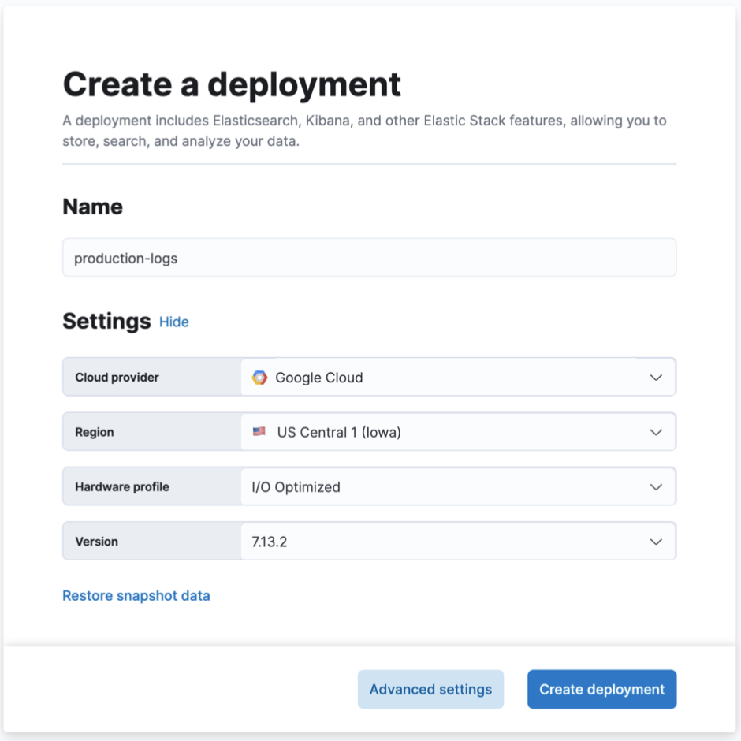

Create your deploymentedit
An Elastic Cloud deployment includes Elastic Stack components such as Elasticsearch, Kibana, and other features, allowing you to store, search, and analyze your data. You can spin up a proof-of-concept deployment to learn more about what Elastic can do for you.
To get started and create a deployment, you can either:
-
Sign up to cloud.elastic.co, if you don’t have an account yet, to start your free Elastic Cloud trial and create your first deployment:

-
Or log in to cloud.elastic.co with an existing account and select Create deployment from the Elasticsearch Service section:

Once you are on the Create deployment page, you can create the deployment with the defaults assigned, where you can edit the basic settings, or configure more advanced settings.
-
From the main Settings, you can change the cloud provider and region that host your deployment, the stack version, and the hardware profile, or restore data from another deployment (Restore snapshot data):
- Cloud provider
- The cloud platform where you’ll deploy your deployment. We support: Amazon Web Services (AWS), Google Cloud Platform (GCP), and Microsoft Azure. You do not need to provide your own keys.
- Region
- The cloud platform’s region your deployment will live. If you have compliance or latency requirements, you can create your deployment in any of our supported regions. The region should be as close as possible to the location of your data.
- Hardware profile
- This allows you to configure the underlying virtual hardware that you’ll deploy your Elastic Stack on. Each hardware profile provides a unique blend of storage, RAM and vCPU sizes. You can select a hardware profile that’s best suited for your use case. For example CPU Optimized if you have a search-heavy use case that’s bound by compute resources. For more details, check the hardware profiles section. You can also view the virtual hardware details which powers hardware profiles. With the Advanced settings option, you can configure the underlying virtual hardware associated with each profile.
- Version
- The Elastic Stack version that will get deployed. Defaults to the latest version. Our version policy describes which versions are available to deploy.
-
Expand Advanced settings to configure your deployment for autoscaling, storage, memory, and vCPU. Check Customize your deployment for more details.
Trial users won’t find the Advanced settings when they create their first deployment. This option is available on the deployment’s edit page once the deployment is created.
- Select Create deployment. It takes a few minutes before your deployment gets created. While waiting, you are prompted to save the admin credentials for your deployment which provides you with superuser access to Elasticsearch. Keep these credentials safe as they are shown only once. These credentials also help you add data using Kibana. If you need to refresh these credentials, you can reset the password.
-
Once the deployment is ready, select Continue to open the deployment’s main page. From here, you can start ingesting data or simply try a sample data set to get started.